Major Projects:
These refer to projects that I have improved upon pre-existing models or methods using innovative approaches,
often producing surprisingly good results.
Lightweight CNN for Speech Keyword Detection:
Developed a lightweight CNN model (31k parameters) to classify 12 speech keyword classes with
90.27% categorical accuracy on the Google V12 Speech Commands Dataset. The model has a 39 ms average inference
time and uses 90 KB memory, competing with SoTA models like TDNN (250k parameters, 94% accuracy).
YOLOv8n Object Detection using Blob Enhancers:
Improved YOLOv8n for small human (far away or occluded persons) detection by 1.1% by adding a pre-processing layer that enhances regions of
interest (through blob detection) before fine-tuning the model. The preprocessing speed merely increased by 2 ms (from 7 ms to 9 ms).
Fake News Recognition with Naive Bayes:
Built an efficient text classifier in R for fake news detection using Multinomial Naive Bayes.
A SQL-based approach enabled handling term-context matrices efficiently, training on 20,800 rows
(average 4,544 words) in under 30 seconds.
Dask Distributed Analysis with Big Data:
Implemented anomaly detection on a large industrial dataset (~5GB) using a virtual cluster
of 3 worker nodes. Efficiently utilized low-level map-reduce parallelization to process the big data.
Minor Projects:
These refer to projects that I use to get comfortable with a concept or tool. The focus of these projects is to
familiarize myself with the tool, and it is less about deriving benchmark-worthy results.
Learning Kant using LLM and RAG:
Tested RAG's capability using Llama-2 as the chatbot LLM, FAISS as the vector store,
and HuggingFace for the pipeline on four influential works of Immanuel Kant, optimizing
prompts and parameters for best results.
Predicting Plasma Crashes with Transformers:
Conducted anomaly detection (magnetic crashes) on a highly imbalanced time series dataset
(plasma evolution) using three architectures: 1-D CNN, DNN, and Transformer.
Audio Generation using Variational Autoencoders:
Built a continuously varying latent space using VAE to generate speech keyword audio samples. This
was done by optimizing the latent dimension and the encoder and decoder parameters, experimenting with
assymetric structures.
Muon Pair Detection:
Identified rare muon events using a signal selection strategy with linear interpolation and count
thresholds on a four-layer detector, modeled after CMS drift tubes.
Speech Keyword Spotting using Lightweight Models
Objective: To build a lightweight model (limiting parameters and multiplies) that maintains a high degree of accuracy
in classifying speech keyword audio samples.
Key Idea: Try to limit the number of parameters and multiplies of the model, making it as lightweight as possible,
while maintaining decent categorical accuracy. For this, I utilize varying strides and pooling sizes, adding image
enhancing techniques (like Gaussian and Sobel convolutions) and addition of Non-Linear LoRA Layer and Channel Attention Blocks (CAB).
Dataset: Google Speech Commands Dataset is chosen so as to cover a wide array of speech sounds as trainable data. The model is
trained on a subset of 8 classes (chosen to span the range of speech sounds), with 3000 audio samples each. Additionally, the model
is tested on the standard V12 dataset, a 12-keyword subset of the same dataset, which enables fair comparison with other
performing models.
Challenges and Methods
I consider two types of inputs, Spectrograms and MFCCs. Each required preprocessing
of their own.
For Spectrogram:
Number of Mel Bins: I chose the standard value of 40 bins, despite larger bin
numbers providing more information. Larger bins increase input size and computational
complexity, which is undesirable for a lightweight model.
Adding Gaussian White Noise: To deal with zero paddings and sharp boundaries in the
input signal, we augment the input signal with gaussian white noise. This makes the spectrogram
devoid of sharp breaks. See Figure 1.
Spectrogram Enhancement: Two approaches are tried. See Figure 2.
Gaussian Filter: Smoothens out the noisy edges present and prevent model overfitting on the noise.
Gaussian + Sobel Filter: Sobel filter is applied along x and y directions, and added up. Gaussian
smoothening is done before and after the above. This highlights the edges and provides a depth to the image.
See Figure 3.
For MFCC:
Appending additional features: Features like Delta, Delta-Delta and Energy are appended
to the MFCC frames to add more context and information.
Inspired by LoRA Adaptation, I built a TensorFlow Trainable Layer that decomposes a
dense weight matrix into two lower-rank matrices, with the rank being user-defined.
For example, a dense layer with 64 nodes can be set to a rank of 32, enabling the
model to operate in a 32-dimensional parameter space while maintaining 64 nodes.
This approach updates parameters in a lower-dimensional space, effectively reducing
the model's parameter load. Applying a non-linear activation function ensures the
layer remains non-linear.
I expect this Non-Linear LoRA Layer with 64 nodes and a rank of 32 to outperform
a traditional dense layer with 32 nodes. This hypothesis is tested in the results section.
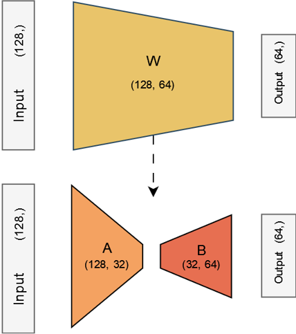
LoRA Pipeline
This method is proposed as an extension to the Squeeze-and-Excite method, where instead
of scoring each channel by its global average, the model learns channel
importance using a dense network. This approach leverages inter-channel
information flow, which is typically absent in CNNs.
The method involves making a copy of the input (e.g., shape 15x15x64), normalizing it,
and passing it through a Dense layer with 64 nodes (matching the number of channels) and
Sigmoid activation. This Dense layer connects channels, enabling inter-channel communication.
The resulting tensor, of the same shape as the input, is multiplied with the original
input, effectively weighting the channels based on learned importance scores.
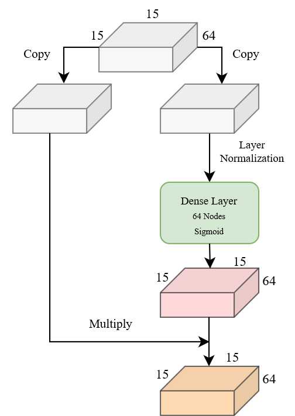
CAB Pipeline
I experiment with both CNN and DNN architectures, making both the cases as optimal
as possible.
Deep Neural Networks (DNN): Follows the standard architecture of having 3 hidden layers, along
with measures against overfitting like L2 Regularization and Dropout (0.25). It will be shown that this standard architecture is not an efficient one, and any enhancements must lead to
an increase in parameters, which is not desired.
dnn_3x128: 3 hidden layers with 128 nodes each. Number of parameters: 184k.
It will be shown that this standard architecture is not an efficient one, and any enhancements must lead to
an increase in parameters, which is not desired.
Convolutional Neural Networks (CNN): The model consists of two convolutional hidden layers, with a Max Pooling layer
after the first, followed by a dense hidden layer of 32 nodes. Regularization techniques such as Dropout (0.25) and L2 Regularization
are applied.
Constraints and Tuning:
Convolutional Layers: Limiting number to two layers, as this will reduce the parameters and multiplies.
Kernel Size: Set to 1/4 and 1/3 of the input image size,
capturing the essential global features of the spectrogram.
Stride Length: 1/5 of the kernel size, maintaining a
slight overlap for context.
Pooling: Emphasized more on the time axis than the frequency axis to focus on frequency
variations, using a (3, 2) pool size.
Models Considered:
cnn_spect: Having Spectrogram as input, with architecture as mentioned above. This contains 26k parameters.
cnn_mfcc: Having MFCC (with additional delta parameters) as input, the above architecture is slightly modified.
No pooling or striding is done as each value corresponds to a unique and relevant feature value. Also, an additional
Dense layer of 64 nodes is added for processing the features well. This contains 97k parameters.
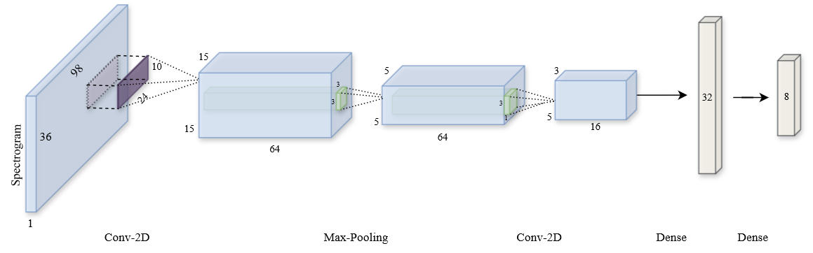
Figure 0: Architecture for cnn_spect
Figure 1: Adding Gaussian White Noise
Figure 2: Applying convolutional filters to produce enhanced spectrograms
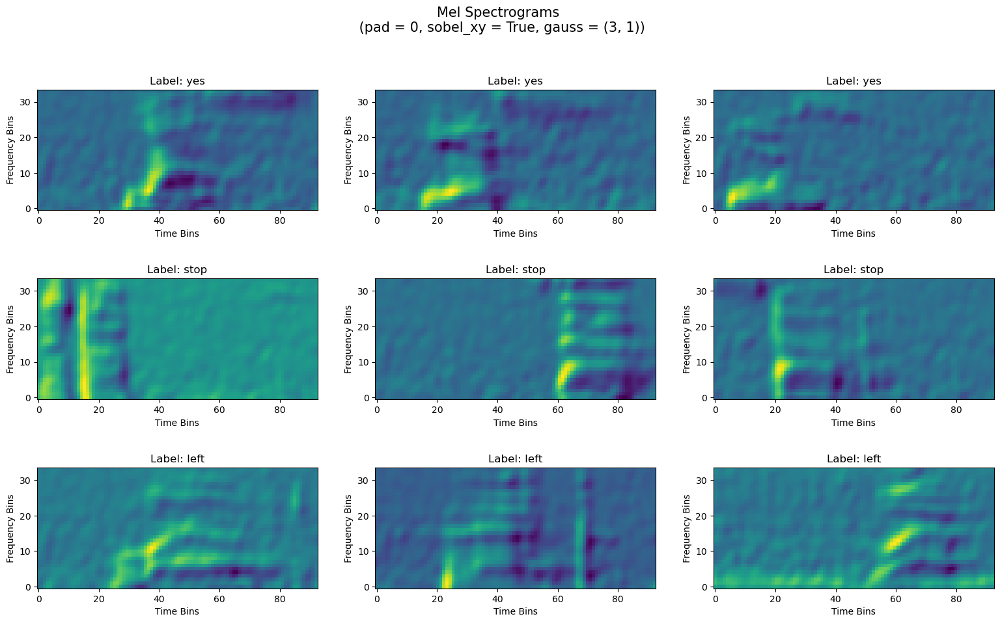
Figure 3: Gaussian and Sobel Enhancing over Spectrograms
The best performing model, cnn_spect_cab (31k parameters), provides 92.5% accuracy on the 8-keyword dataset and 90.25% accuracy on the V12 dataset.
With an inference time of 39 ms and a memory load of 90 KB, this is a very lightweight architecture that maintains a high classification accuracy (>90%).
In comparison with SoTA models, taking into account both accuracy and number of parameters, this model is seen to be much more efficient. This is quantified using a Model Score metric defined as the accuracy divided by the number of parameters, with linear scaling applied.
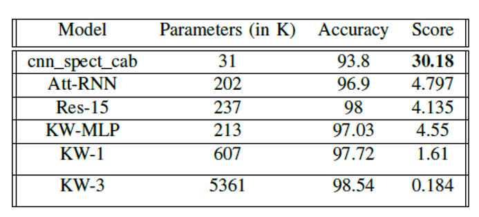
Comparison with SoTA Models (for cnn_spect_cab)
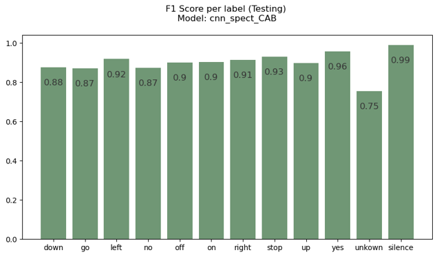
F1 Testing Scores for V12 Datset (using cnn_spect_cab)
Comparison with Filters
We see that the gaussian filter and no filter are better than using sobel
filter. This might mean that using no filter is a better approach.
However, we notice that the variability in each class training
is lesser when using gaussian filters, than using no filter at all.
Thus, we prefer gaussian filters since this makes the model
more stable and reliable.
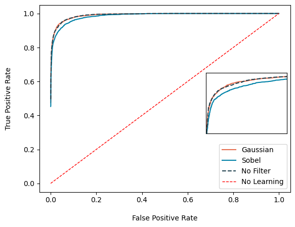
Comparison with filters (for cnn_spect)
Comparing DNN Enhancements
The standard DNN architecture with minimal layers performs poorly, even with enhancements. While deeper dense
architectures might help, they increase the parameter count (as seen in the first figure below), which is undesirable.
Using methods like stacking and adding delta features do not work likely due to DNN's limited capacity to process
spatio-temporal information. Overall, DNN enhancements fail to produce a model that is both accurate and compact.
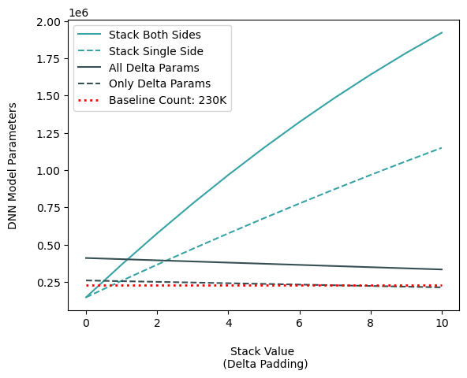
Varying DNN model size with enhancements
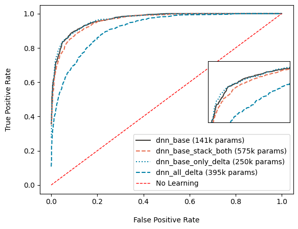
ROC Curve for DNN Enhancements
Comparison using Non-Linear LoRA Layers
Firstly, the ROC curves for both cnn spect and cnn mfcc are similar, with categorical accuracy around 90% (0.16).
However, cnn_mfcc has about four times more parameters, meaning cnn_spect achieves similar accuracy with fewer parameters.
Secondly, the LoRA layers do not seem to contribute much,
although a slight improvement is noted. The accuracy values
increase by 0.5%. This seems promising, and this layer might
be better suited for large networks that require a necessary
decrease in computational load. In lightweight models, this
layer does not help.
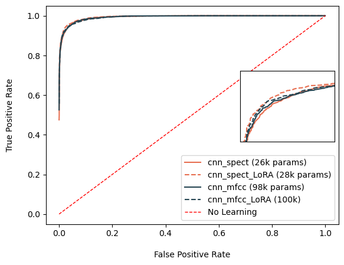
Comparison with varying inputs (MFCC vs Spectrogram) and Non-Linear LoRA Layer
Comparison of Best Models with Non-Linear LoRA
There is significant improvement in performance,
in both cases for cnn_spect and cnn_mfcc, when
applying the Channel Attention Block (CAB).
For cnn spect, the categorical accuracy increased to 93.8% (0.167). This shows that apart from the
spatial analysis done using CNNs, pairing it up with a channel based
analysis using CAB helps improve performance.
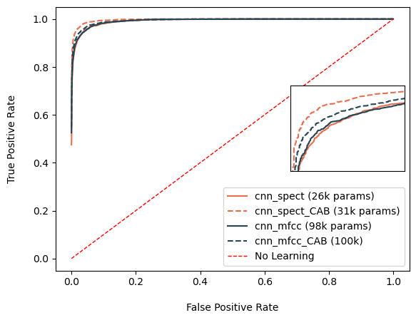
Comparison with CAB Layer
Confusion Matrices on Test Sets
Trained the best model architecture (cnn_spect_cab) on two different datasets, one with a 8-keyword subset and the other being the V12 dataset.
The classes were chosen so as to challenge the model while covering the range of keyword phonetics. It is observed
that this architecture performs equally well on both the test sets, with a categorical accuracy of greater than 90% categorical accuracy.
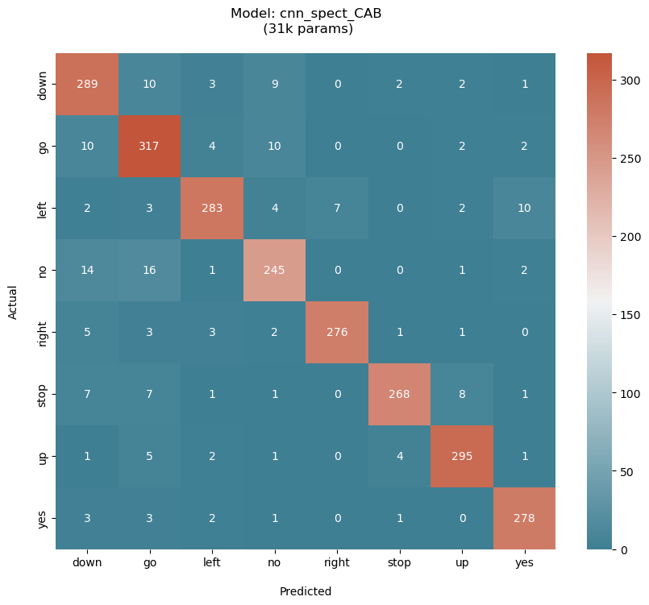
Confusion Matrix on 8-keyword subset: 92.5% Accuracy
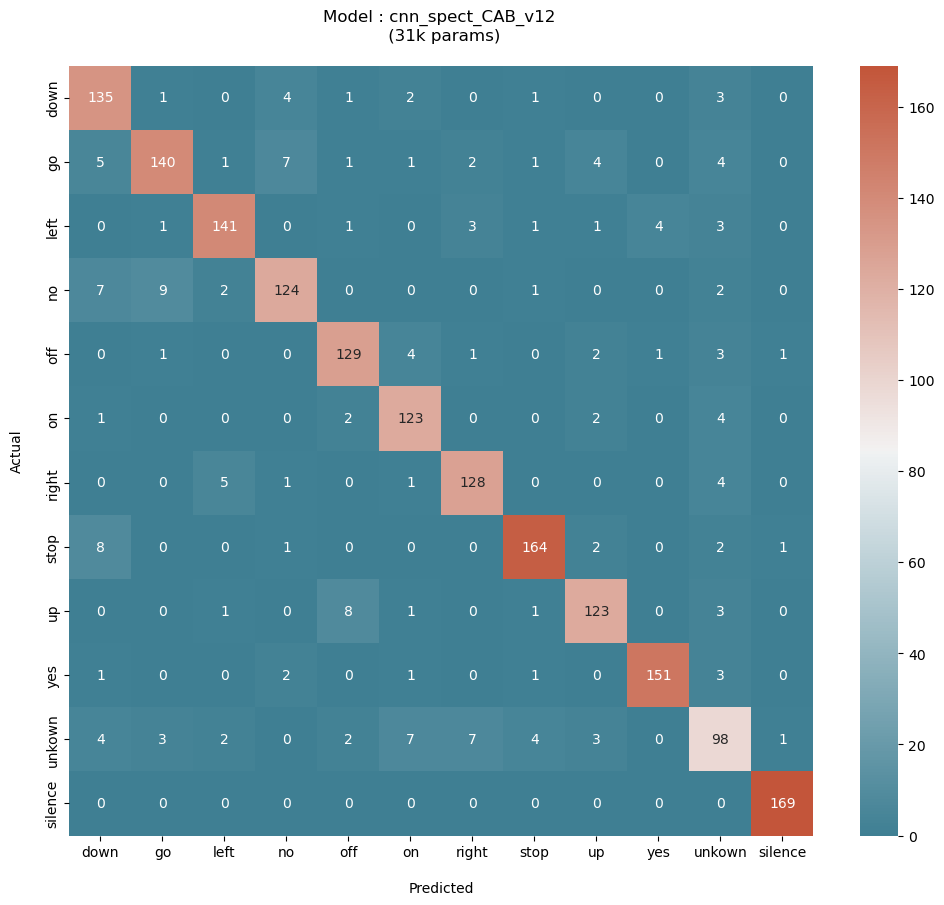
Confusion Matrix on V12 Dataset: 90.27% Accuracy
Human Detection using a Blob-Enhanced Region Proposal Layer in YOLOv8n
Objective: We aim to improve performance of YOLOv8n on small human detection, where we define
small human to be far-away or occluded persons.
Key Idea: We hypothesize that sharpening specific regions (like facial features) can guide the model in
detecting better. For this, we manually tune the parameters of a simple blob detector to capture facial features,
after which we sharpen these regions and superimpose them onto the original image. This enhanced image is used
as input to the model.
To achieve the best performance, we optimize parameters (freezing backbone and keeping image size as 1280) and finetune
the model, comparing its performance to the original model.
Original Image
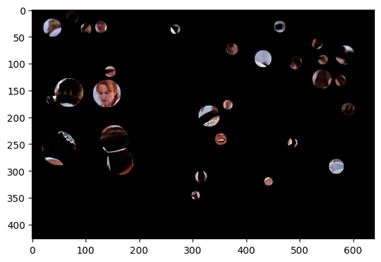
Image Blob Mask
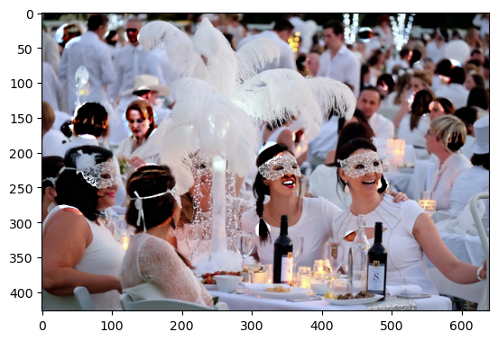
Enahnced Image
Challenges and Methods
Choosing Dataset: We choose the CrowdHuman Dataset, which is a standard set that contains a
high person per image ratio compared to other datasets, and it contains a high
ammount of occlusion. This is the perfect dataset to test our small human task on.
Preprocessing Data: The data had to be preprocessed and converted to YOLO standard format
(align to center of bounding box and normalize values) for annotations. New directories had to be
created in the standard format for YOLO.
Preparing Small Human Test Annotations: To prepare the dataset for the task, we defined a small human by area and kept only such
annotations that passed our area threshold. The large annotations were discarded. We chose the
recall metrics to evaluate on this extracted data, as this would give us a good measure of
how many small humans have been detected.
We use the SimpleBlobDetector method from OpenCV, which blobs using thresholding
and obtaining binary images, and filtering out based on the parameters we set. The
parameters control the shape and size of the blobs, which we reason as:
Minimum Area = 200: Sets a lower bound on the pixel area of the
bounding box. This restricts blobs from focusing on unnecessary finer details,
and instead redirecting it to more general and larger features.
Minimum Circularity = 0.4: This selects blobs that can range from being circular
to rectangular. Since the detector cannot recognize faces as a whole, it might detect
parts of the face, which can even be rectangular.
Minimum Inertia = 0.01: This measures how elongated the blob is. This lower bound
filters out identifying lines.
Finding out the appropriate place to inject the enhancer layer required
reading through the YOLO base repository and documentation. This provided us
a deep knowledge of the workings behind how YOLOv8n is built up.
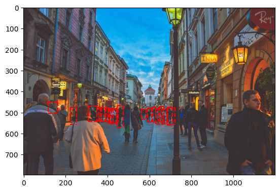
Small Human Annotations
Parameter Optimization
We used the single_clss attribute, which allows the model to train on a single class label.
Optimization was conducted on image size and frozen layers, and the optimal values found were
1280 image size and 10 frozen layers (freezing backbone).
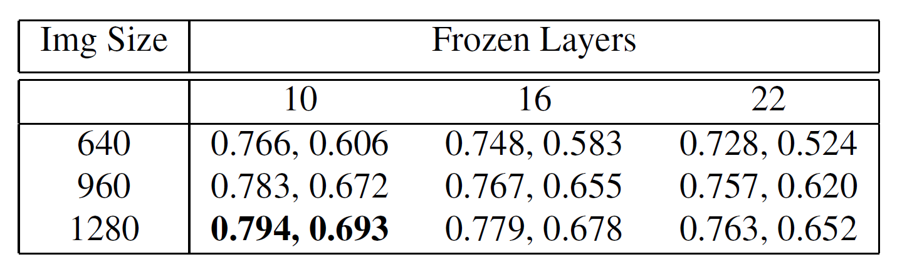
Grid Search for Parameter Optimization with (Precision, Recall) metrics
Performance on Small Human Test Dataset
For the task of small human detection, we prioritize recall, as it measures how many small humans are detected.
Detecting large humans impacts precision, not recall, making recall the true measure for this task.
We validated the model on test datasets of 500 and 1,000 images, comparing the performance of YOLOv8n with three
different weights: pretrained, fine-tuned without sharp blobs (Main branch), and fine-tuned with sharp blobs
(SimpleBlob branch). As shown in the table below, performance improved across the board, with the model fine-tuned with
sharp blobs performing best.
Thus, fine-tuning with blob-enhanced images improves performance by 1.1% in the challenging task of detecting small humans.
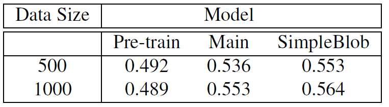
Models Comparison with Recall Metric
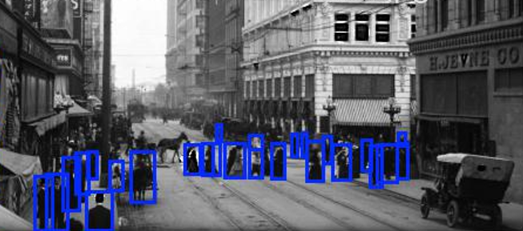
Prediction (without blob enhancement)
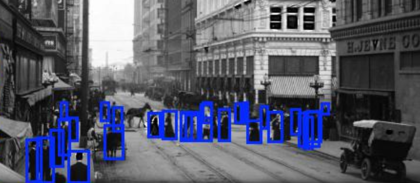
Prediction (with blob enhancement)
Multinomial Naive Bayes Classification for Fake News Detection
I was interested in building a text classifier capable of recognizing fake news in
the varying degrees. I dealt with two different datasets, one with six different classes
and the other with two classes. Using the R Language, I implemented the Multinomial Naive
Bayes Classifier algorithm from scratch (using a few essential libraries) using a SQL-based
approach for optimal efficiency. Such an approach proved beneficial as the model was able to
train and validate through the second dataset, which had 20800 rows each containing an average
of 4544 words, in under 30 seconds. An additional advantage is that such an approach enables
easy translatibility into more parallelizable frameworks like SparkR, making it capable of dealing
with even larger datasets in lesser time frames.
Challenges Faced
Decreasing the vocabulary to include only relevant words of each label
enables the model to classify documents better by detecting high contributing
words easily. This was a huge task, involving linguistic and statistical methods
to ensure only relevant words remained in the vocabulary.
When faced with new words not present in the vocabulary, the model can make
a prediction with less reliability. This was addressed with a reliability
measure that depends upon preference.
When dealing with multiple classes or labels, the usual metrics needed to be
generalized to this broader scenario. The usual methods of calculating the
metrics (in the binary case) would not provide a clear or sensible measure of
the performance.
Methods Used
Removing stop words (a, the, if, etc.), punctuations, numbers, extra whitespaces
This is done to bring all related words to a common root
(run, running, ran -> run). I use stemming, which ignores
endings of words (-ing, -er), and lemmatization, which
converts a word to its root form (ate to eat).
This is done to remove irrelevant words to each label and
to decrease the size of the vocabulary. A utility measure
is assigned to each combination of (term, label) and I select
the top n terms per label. We use Mutual Information measure,
which provides a sense of how relevant and related a word is to
a class based on its occurrence throughout the data.
This adds a degree of reliability to our model's predictions.
If a document contains a high percentage (say 75%) of words
outside of the vocabulary, it is ignored since its prediction
would not be reliable.
First Dataset : Six Labels
In the first dataset, I manage to use the top 100 words in each label
(using 8% of the original vocabulary), and obtain a better performance than
when using all the words.
Optimal Top-N: 100 (8%), 500 (41%), 750 (60%)
Optimal Top-N: 100 (8%), 500 (41%), 750 (60%)
( Out of 7417 features in vocabulary )
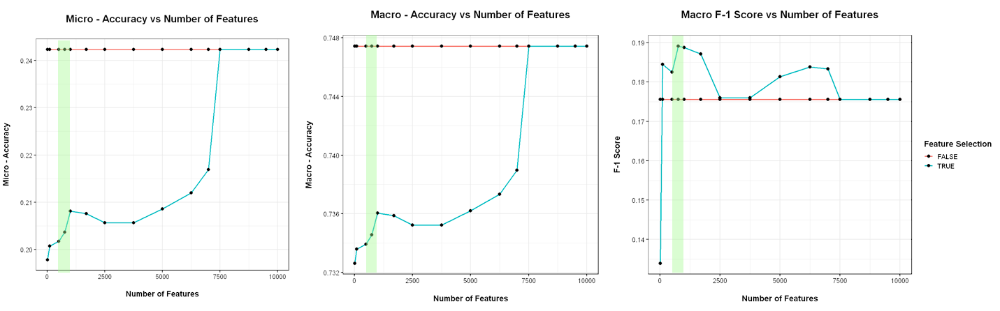
Second Dataset : Two Labels
In the second dataset, using the top 20000 words in each label
(28% of the original vocabulary size), I still manage to get a
decent performance compared to using all the words.
In this project, we were interested in implementing anomaly detection on a large
industrial dataset (~5GB). Using the various features of Dask like task graphs and its performance
dashboard, we parallelize the tasks and make analyzing big data feasible and efficient. We use an
assigned Virtual Cluster consisting of 3 worker nodes for the distributed analyses. With the help of
these, we managed to figure out the anomaly events and obtain the variables most correlated to the anomalies.
Challenges and Methods
For parallelizing tasks while saving local memory, using the map-reduce paradigm
is most efficient. In order to obtain such a task graph, especially when dealing
with Dask Dataframes, there is no straightforward function available.
It required wrapping each partitions of the Dask Dataframe into delayed objects, after
which they were put in a Dask Bag structure. This enabled us to carry out the reduce
phase, and obtain a tree-reduction task graph.
The provided dataset contains measurements at uneven time intervals,
within a period of one year. Prior to any analysis, it was necessary
to clean and normalize the dataset by normalizing the time intervals
in a parallel manner.
When normalizing, we had to consider the occurrence of each metric
in each time period. We settled on a time period of 200 seconds,
where each metric occurs on an average on 97% in a time interval.
When grouping, we defined a custom aggregation function which
aggregates a metric depending on its data type. Integers were
max aggregated while float types were mean aggregated.
An anomaly event was classified as a period in which high frequency
fluctuations occur in any of the four engines (given as 4 binary metrics).
In order to detect such events, we considered the 4 engines as a single system
and defined an integer value to its state in each time interval. The integer
value was derived from concatenating the four bit states of the individual
engines and obtaining the integer equivalent. Any change in the system's state
would correspond to a change in the integer value. In this way, we check for any
high frequency changes in the integer values, providing us possible anomaly events.
Anomaly Correlations
We tested the correlations for two cases, one for each device and one considering
all devices together. We found that the correlations are drastically low in the latter
case, suggesting that the devices act differently possibly due to different environments
or configurations. Two of these devices showed high correlations with temperature and
pressure parameters, while the other two were not correlated to any of the available parameters.
Parallelization
Each task was parallelized utitlizing the task stream and graphs, carrying out distributed
analysis to obtain the results.
Benchmarking
Comparing the performance variations while varying the number of workers and partitions, we find
that the ideal number of workers falls between 4 and 7. In the case of partitions, there isn't a
prominent ideal zone, however we see that there is a loose decreasing trend in time as the
partitions increase.
Testing Llama-2 with RAG on philosophy of Immanuel Kant
The objective was to test a RAG system's ability to provide concise answers through
prompt engineering and parameter optimization. Using four influential works of
Immanuel Kant (a challenging domain), I assessed the system's contextual
awareness and retrieval capabilities. The tests involved two sets of questions:
direct definition queries and complex analysis questions requiring long-span
context understanding.
The texts used for the analysis are (obtained from the Project Gutenberg data repository):
Book_1: Kant's Critique of Judgement
Book_2: The Critique of Practical Reason
Book_3: The Critique of Pure Reason
Book_4: Fundamental Principles of the Metaphysic of Morals
Text Length (chars)
Vocabulary Size
Type-Token Ratio
Word Counts per Paragraph (Mean, Median)
Text Sentence Sizes (Mean, Median)
Text Paragraph Sizes (Mean, Median)
Book_1
766,930
7743
0.13205
214.6, 186
320.57, 261
1156.82, 952
Book_2
377,956
3970
0.13943
277.2, 246
412.34, 316
1602.25, 1342
Book_3
12,911,282
8040
0.08328
214.2, 184
302.75, 246
1197.78, 1016
Book_4
180,176
2539
0.18706
212.3, 186
393.77, 291
1083.83, 1006
Challenges and Methods
To make working with a 7B pre-trained model feasible, I utilize model
quantization which decreases the model parameter precision.
The queries were chosen to represent two commonly found types of queries in a retrieval system:
Direct Queries: Basic Definition type retrieval tasks
Analysis Queries: Requires contextual understanding that can span sentences or paragraphs. This
might also be a slightly modified version of a direct query, thereby testing the model on its capability
in grasping the true semantics of the query despite the complex paraphrasing.
The questions considered are as follows:
Direct: What is meant by moral law?
Direct: What is transcendental idealism?
Direct: What is the categorical imperative?
Analysis: How does the formulation of the categorical imperative establish a foundation for
universal moral laws, and what are the implications for individual autonomy?
Analysis: How does transcendental idealism distinguish between phenomena and noumena,
and what are the philosophical implications of this distinction for human cognition and metaphysics?
I choose two different values [500, 250] to compare between large and small
token sizes, paying attention to if the answers turn out to be clear and
concise or hallucinations.
Having a large maximum token size (500) resulted in accurate but redundant
answers. The answers were all over the place, with the model trying to reiterate
the point it already made by paraphrasing itself. Especially for straightforward
queries like a definition query, the model tries to state the definition and
continue further on it, which takes away from its digestibility.
When decreasing the maximum limit to 250, there is a significant increase in
clarity observed. The answers are concise and digestible, both for
straightforward and challenging questions.
I considered chunk sizes of 1041 and 264 characters, corresponding to average
paragraph and sentence lengths. These values help maintain semantic coherence,
making the retrieval process more intuitive for the embedder and retriever.
For chunk overlap, I tested values of 0 and 260 for paragraphs,
and 0 and 66 for sentences, with the non-zero values being one-fourth
of the chunk sizes. This comparison aimed to determine if no overlap
(treating each chunk independently) was more effective than having
some overlap, allowing meaning to carry over between adjacent chunks.
I tested three temperature values0.001, 0.1, and 0.25to analyze how reply
quality changes from straightforward to more creative responses.
For direct questions, a temperature close to 0 proved optimal, as simple
retrieval tasks benefit from straightforward, non-creative replies.
For challenging questions, a temperature of 0.1 was ideal. Lower values
caused the model to quote sources directly without context, making replies
unclear. Higher values resulted in overly varied responses, leading to information loss.
Three different templates were tested:
Simple Prompt Template: Asks the model to answer based on
provided information. The model often hallucinates and gives
confusing, confident replies, relying more on prior knowledge
than the provided information.
Constraint Prompt Template: Asks the model to answer based on
the information and only if it is sure. This reduces hallucination,
resulting in clearer answers. The model sometimes adds a "Justification"
section, explaining why it believes the answer is correct.
Justification Prompt Template: Adds a "Justification" section to the Constraint
Prompt Template. However, the model often ignores the answer section and only
fills in the justification, indicating confusion with the format.
After parameter optimization and prompt engineering, the RAG-paired LLM
was able to provide clear and concise answers to both types of queries
(direct and analysis) regarding the philosophy of Immanuel Kant. This shows
that even a complex and nuanced domain as this can be tackled using this approach.
The optimal configuration found was as follows:
Maximum Token Size: 250. The lower number of output tokens helped the model to
be direct with the answers, instead of being vague and all over the place.
Chunk Size and Overlap: 1041, 260. It was found that considering the average paragraph
length, along with an overlap of one-fourth the same length, provided the best results.
This allowed the model to infer the contained semantic information within a paragraph, while
utilizing the overlap to understand context from previous paragraphs.
Temperature: 0.1. This optimal value provided outputs that were diverse, with the model
able to add its own inferences, while being grounded in the available facts.
Prompt Template: Using a prompt with a constraint stating that the model is required to
provide answers only if it is sure of it, helped in curbing hallucinatory answers.
Optimal Answers
I am confident that the moral law refers to a formal determining
principle of action by practical pure reason, and a material though only objective determining
principle of the objects of action as called good and evil. It is also a subjective determining
principle, that is, a motive to this action, inasmuch as it has influence on the morality of the
subject and produces a feeling conducive to the influence of the law on the will. The moral law is a
positive feeling produced by an intellectual cause, and is the only one that we know quite a priori
and the necessity of which we can perceive.
I am confident in my answer. Transcendental idealism is a
philosophical position that argues that the world as it appears to us through our senses is not a
real or objective existence, but rather a creation of our own minds. This idea is based on the
notion that the world is not a thing in itself, but rather a representation or construction of our
own minds. The term "transcendental idealism" was coined by Immanuel Kant in his Critique of Pure
Reason, where he argued that the human mind imposes certain structures and categories on our
experience of the world, rather than the world itself being a fixed and objective reality. According
to Kant, the world as it appears to us is not a thing in itself, but rather a set of appearances or
representations that are shaped by the mind's categories and concepts. In essence, transcendental
idealism is a form of subjectivism, which holds that the only truly existing things are mental
representations or ideas. This position is often contrasted with realism, which holds that the world
has an objective existence independent of our minds.
I am confident in my answer. The
categorical imperative is the idea of freedom. Explanation: In the passage, Kant explains that the
categorical imperative is the only hypothesis on which it is possible. He also states that the
imperative contains the necessity that the maxims of an action should conform to a universal law,
and this conformity alone represents the necessary. Kant argues that the imperative cannot be blamed
for refusing to explain this necessity by a condition, as this would cease to be a supreme law of
reason. He concludes that the categorical imperative is the idea of freedom, as it represents the
objective necessity of an action without reference to another end. In summary, the categorical
imperative is the idea of freedom, as it represents the objective necessity of an action without
reference to another end. This idea is the only hypothesis on which the imperative is possible, and
it is the foundation of moral laws.
I am confident in my answer. The
formulation of the categorical imperative establishes a foundation for universal moral laws by
grounding them in the rational nature of human beings as intelligent beings capable of self-
legislation. This is done by conceiving the maxim of the action as a universal law, and recognizing
that the will as a supreme legislator cannot depend on any interest. Instead, the will is seen as a
free and autonomous entity that gives universal laws to itself, and these laws are recognized as
imperatives for the actions of the individual. This approach to morality emphasizes the rational
autonomy of the will, and the idea of freedom makes it possible for individuals to act in accordance
with universal moral laws, rather than simply following their personal desires or interests. The
implications of this approach for individual autonomy are significant. By recognizing the autonomy
of the will and the rational nature of moral laws, individuals are able to act in accordance with
their own moral principles, rather than simply following external commands or social norms. This
allows for a greater degree of personal freedom and agency, as individuals are able to make choices
based on their own moral values and principles
I am
confident in my answer. Transcendental idealism distinguishes between phenomena and noumena by
positing that phenomena are the appearances of things as they are perceived through the senses,
while noumena are the things in themselves, independent of how they are perceived. This distinction
is based on the idea that the human mind can never directly know the things in themselves, only
their appearances. The philosophical implications of this distinction are far-reaching. It means
that our knowledge of the world is always limited to the appearances of things, and we can never be
certain that we are perceiving things as they truly are. This challenges the idea of direct realism,
which holds that we can have direct knowledge of external objects. Instead, transcendental idealism
suggests that our knowledge of the world is always mediated by the mind and its cognitive faculties.
Furthermore, the distinction between phenomena and noumena has implications for the nature of
reality itself. If phenomena are the appearances of things, and noumena are the things in
themselves, then reality must consist of both appearances and things in themselves.
Using Transformers to analyze Plasma Evolution (Time Series) to classify magnetic field crashes
We were interested in detecting crashes (magnetic reconnection) occurring during plasma evolution,
based on 65 given parameters. This can be viewed as a binary classification problem for a highly
imbalanced time-series dataset. In order to get an idea of how Transformers perform in such tasks
against traditional architectures, we conducted a comparative analysis of three models: 1-D Convolutional
Neural Network, Deep Neural Network, Transformer. It was found that the Transformer performs the best and provides
more reliable predictions in this scenario.
Challenges Faced
The percentage of crashes in the dataset is highly imbalanced.
The majority class (no crash) takes 99.5% of the dataset,
while the minority class (crash) is a mere 0.48% of the dataset.
This would require more number of datapoints, or utilizing certain methods
to overcome this high data imbalance.
Some solutions were unreliable, where they either predict one or
zero most of the time. This can be interpreted as a result of the
data imbalance, and we had to use several methods and tweak the
parameters to arrive at a satisfactory solution.
Methods Used
In order to train and validate on the data,
we used a training window (length of window used for training),
prediction time (how further we want to make a prediction) and
prediction window (checks for crash inside this window).
Chooses effective components such that 99% variance is
covered. We go from 65 to 29 parameters, without losing
significant information. This decreases the dimensionality
of the parameter space, and ignores redundant parameters
Randomly sampling a portion of the majority class
using an acceptance parameter.
Maintains equal proportion of minority class when splitting
the data. This ensures that there is a decent amount of minority
class elements to train and test on.
Acts as a measure against class imbalance, and improves overall performance
Results Obtained
From the metrics used, we focused on both accuracy and recall as they
tell if the model is learning and making good predictions. We prioritized
recall over precision as the cost of predicting a false negative is greater
than that of a false positive, i.e., predicting no crash when there is actually
a crash is considered to be highly undesirable. On applying the methods and analyzing
the performances with the metrics, we found that the transformer performs the best,
providing better and reliable results.
Transformer: Best Model Performance
Audio Generation using Variational Autoencoders (VAE)
With two of my peers (Kiamehr Javid, Davide Checchia), we trained a VAE to generate audio samples from a
spatially rich latent space that allowed transition between clusters. The idea behind this project was to
approach audio generation using the tools of Information Theory.
Theory: Supposing the audio is generated from a
lower-dimensional latent space, we try to model this posterior distribution present in this space. Variational
Bayes posits that we use an approximation to the true posterior and try to model the former. It provides a clever
way to approach this using the ELBo, where we try to maximize this term. This, in the end,
provides us with a loss function that constrains the approximate distribution to be around a prior distribution, and
vary according to the likelihood data points. This eventually provides a good approximation for our true posterior distribution.
Dataset: We use the mini-Speech Commands Dataset, a subset of the Google Speech Commands Dataset. This consists of 8 classes (with 1000 samples each)
of short speech keywords. We define a default sample rate of 16k, and filter out any samples not having this rate. For the VAE, we convert these samples to
respective Spectrograms, resulting in a slight information loss (as shown below).
Audio Sample: Stop
Mel Inversed Audio Sample: Stop
Challenges and Methods
Although PCA is fit for a linear analysis, and the model we are dealing with is
non-linear, PCA can however fix an upper bound that we can work with. It provides a
good starting point in dealing with optimizing the latent space dimension.
We consider the decoder to be either symmetric (same, inversed shape of encoder)
or asymmetric (not same, inversed shape of encoder). As we require the encoder to be
more complex since it maps input to latent space, we find that using an asymmetric
decoder leads to better generative samples.
We compare three different models: a complex symmetric model (1.2M parameters), a lightweight
symmetric model (324k parameters), a lightweight asymmetric model (35k parameters). The architecture
is made of convolutional modules (Conv Layer, Max Pooling, Batch Normalization) stacked one after the other.
We find from the results below that the best model is the lightweight symmetric model (324k parameters),
and the optimal latent dimension is 16.
The encoder produces two outputs (one for the mean and the other for the standard deviation), which are linked
to a stochastic variable for each batch. In a symmetric model, the Decoder is a mirror image of the encoder, while
in the asymmetric case, the Decoder contains lesser parameters than the Encoder. This is because the encoder is concerned
with the difficult task of mapping the input to the latent space, requiring more parameters.
Complex Symmetric Model
Casting the high-dimensional clusters to two dimensions using t-SNE, we see that there is slight presence of clustering,
confirmed by a decent silhoutte score. However, we find that the mean of each cluster (corresponding to each label) does not
generate good speech. From the PCA plot, we see that a few latent axes cover most of the variability, which
can be interpreted as the existence of redundancy as a lower number of axes manage to cover most of the information.
Thus, we can find a lower dimensional space and possibly work with a low complexity model.
Original Sample: Right
Regenerated Sample: Right
Cluster Mean: Left
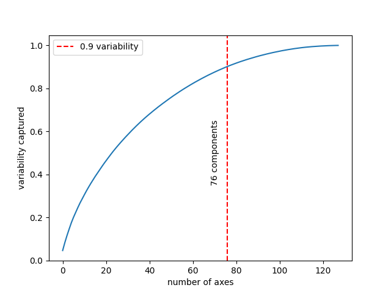
PCA Analysis
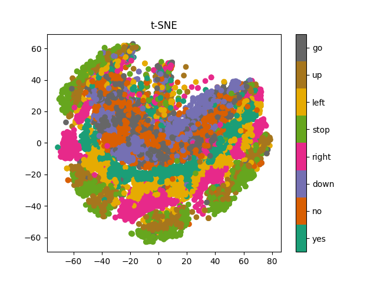
t-SNE Plot
Lightweight Symmetric Model
Using t-SNE, we see that there is better clustering than in the previous model. The PCA plot looks promising,
as it points towards redundancy between axes, pushing us to simplify the model even more. From the audio samples,
we see that the regenerated sample is perfectly legible, and even the cluster mean turns out to be a good reproduction.
We can still try to simplify the model further and see if any improvements can occur.
Original Sample: Down
Regenerated Sample: Down
Cluster Mean: Stop
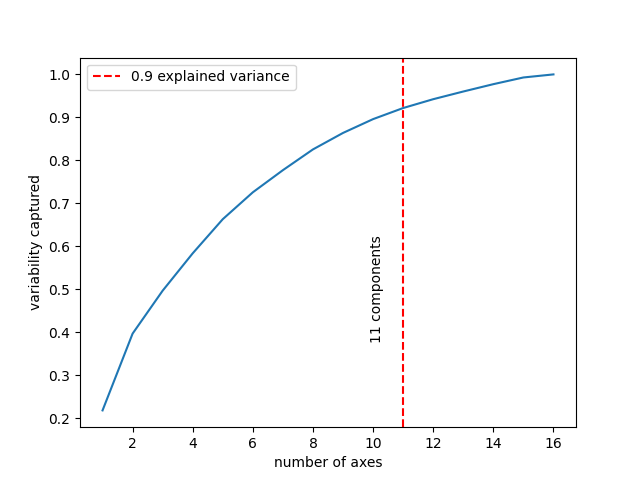
PCA Analysis
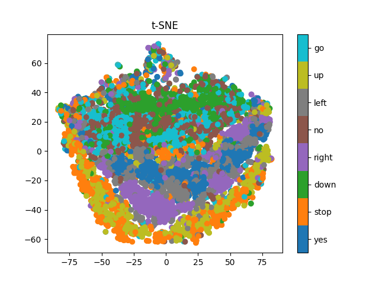
t-SNE Plot
Lightweight Asymmetric Model
Here, the PCA plot tells us that the optimal dimension is higher, as the relation is close to linear, signaling that
there is little redundancy, and possibly this dimension is not enough to capture all the complexities of the data. This hints
towards choosing a larger latent dimension. Additionally, the regenerated sample, along with the
cluster mean sample, is not as good as the lightweight and symmetric model results. We believe the model does not contain
the required number of parameters to capture the complexities of the input data. Thus, we conclude that the best model
among the three is the lightweight and symmetric model.
Original Sample: Yes
Regenerated Sample: Yes
Cluster Mean: Yes
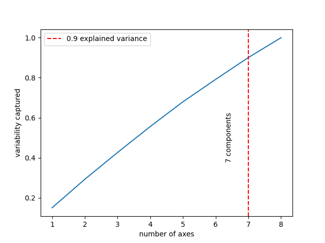
PCA Analysis
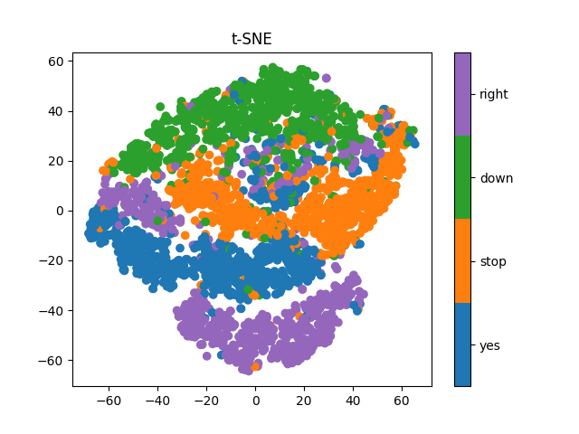
t-SNE Plot
Muon Pair Detection in Drift Tube Chambers
The goal of this project was to identify events with muons passing through the
detectors, which is a very rare occurrence. Using a dataset of detections recorded
by each detector, we were required to identify muon pair events using a signal selection
strategy. As each detector contained four layers of numerous cell-shaped drift tubes,
this required geometric analysis to detect pair generation and to separate out the noise events.
Challenges and Methods
In order to validate and debug our strategy, we plotted the system
set-up so that each event could be visualized and made sense of.
For muon pair generation, we approximate the pair trajectories to follow
linear paths close to the detectors. If two linear trajectories occur
simultaneously, with a close enough slope (the deviation is measured by
a parameter), it is classified as a muon detection.
However, each detector contains four separate layers of drift tubes.
Thus, such linear paths must be established both globally (among detectors)
and locally (among layers of drift tubes in each detector).
In the local case, if there are at least 3 hits in 3 different
layers of a detector, that is classified as a possible trajectory.
In the global case, all four possible linear trajectories are
extrapolated and the slopes compared to confirm a muon pair detection.
We were able to detect 327 muon pair generation events from a
total of 34428 events. As the detection rate is similar to the
standard rate of detection by drift tube detectors, our identification
strategy is successful in classifying muon events to a high degree of
accuracy.